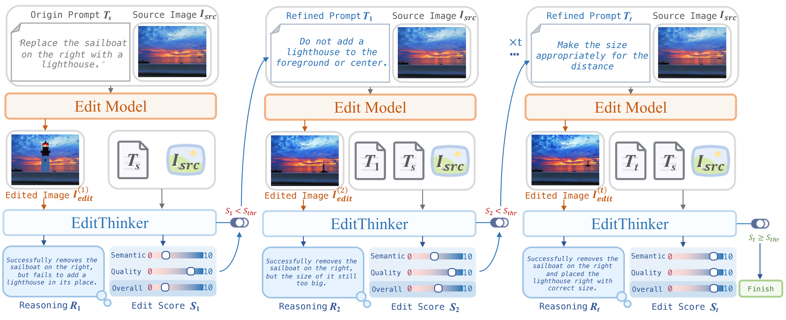
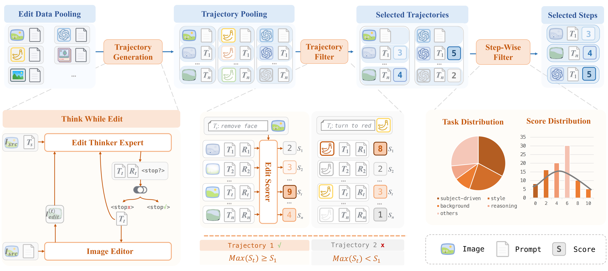
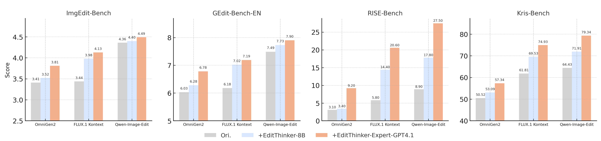
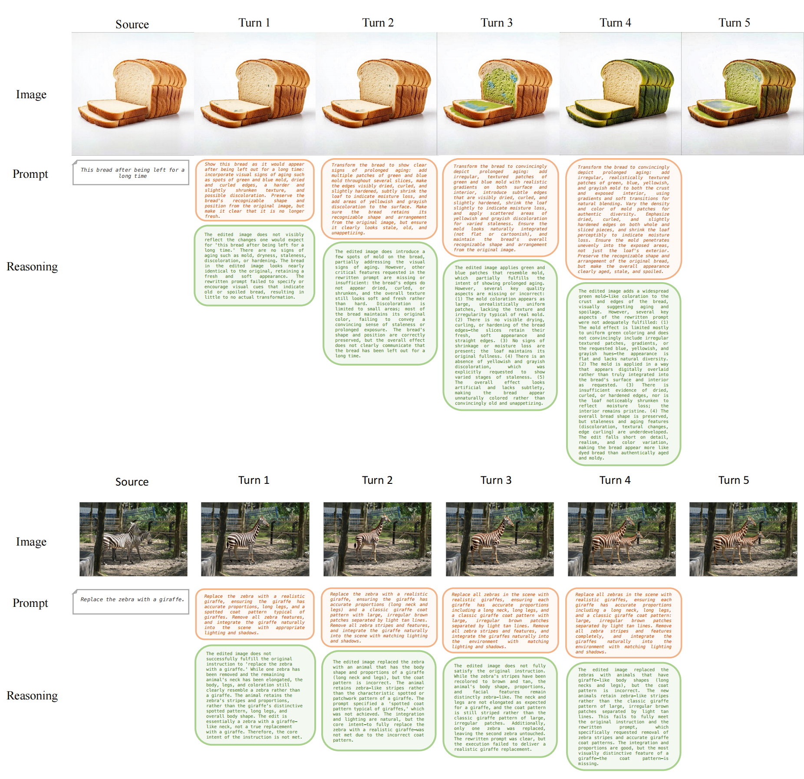

EditThinker
Unlocking Iterative Reasoning for Any Image Editor
EditThinker
Unlocking Iterative Reasoning for Any Image Editor
1Beihang University
2Meituan
3CUHK MMLab
4CUHK IMIXR
5Tsinghua University
†Project Leader
*Corresponding Author


Demo of EditThinker. The animation illustrates the multi-turn Think-while-Edit process. The model iteratively critiques the current generation, reasons about the gap, and refines the prompt until the stop signal is triggered.
Abstract
Instruction-based image editing has emerged as a prominent research area. Benefiting from image generation foundation models, it has achieved high aesthetic quality, making instruction-following capability the primary challenge. Existing approaches improve instruction adherence via supervised or reinforcement learning, yet single-turn success rates remain limited due to inherent stochasticity and a lack of deliberation.
In this work, we propose a deliberative editing framework to "think" while they edit, which simulates the human cognitive loop by iteratively executing a Think-while-Edit cycle: Critiquing results and Refining instructions, followed by Repeating the generation until satisfactory. Specifically, we train a single MLLM, EditThinker, to act as the reasoning engine of this framework, which jointly produces the critique score, reasoning process, and refined instructions. We employ reinforcement learning to align the EditThinker's thinking with its editing, thereby generating more targeted instruction improvements.
Extensive experiments on four benchmarks demonstrate that our approach significantly improves the instruction-following capability of any image editing model by a large margin.
Framework: Think-while-Edit

The Pipeline of Think-while-Edit. EditThinker is a multi-round instruction iterative refinement framework. In the first round, the original image $I_{src}$ and instruction $T_s$ are fed into an editor. The output is fed into EditThinker, which generates the edit score $S_t$, refined prompt $T_t$, and reasoning process $R_t$.
Critique
Evaluate Results
At iteration $t$, EditThinker receives the state $(I_{src}, I_{edit}^{t-1}, T_{t-1}, T_s)$ and jointly evaluates the previous edit, generating critique score $S_t$ and reasoning process $R_t$.
Refine
Refine Instructions
Based on the critique, EditThinker generates a refined instruction $T_t$ that addresses identified deficiencies, creating an explicit chain of thought that grounds instruction refinement in visual critique.
Repeat
Iterate Until Satisfactory
The Editor executes the refined instruction $T_t$ on $I_{src}$ to produce $I_{edit}^t$. This Critique-Refine-Repeat cycle continues until the score $S_t$ indicates success.
Data Construction: ThinkEdit-140K

Data construction pipeline. We construct our dataset through four sequential steps: (1) Trajectory Generation with GPT-4.1 Expert, (2) Trajectory Filter using scores, (3) Step-wise Filter to create training samples, and (4) Data Partition into SFT and RL datasets.
To train EditThinker, we constructed ThinkEdit-140k. We employ reinforcement learning (RL) on difficult, high-variance trajectories to align EditThinker's reasoning with actual editing outcomes, while using SFT on stable trajectories for foundational capabilities.
Performance

Quantitative Results on Benchmarks. Our approach shows large gains for existing editing methods (FLUX.1 Kontext, OmniGen2, Qwen-Image-Edit) across four image editing benchmarks (ImgEdit-Bench, GEdit-Bench, RISE-Bench, Kris-Bench).
Visualizations
The Thinking Process

Thinking Process Visualization. EditThinker iteratively critiques errors (e.g., missing objects, wrong attributes) and refines the prompt until the user instruction is fulfilled.
More Visualizations

Qualitative Results. Our framework significantly improves instruction-following capability across diverse editing scenarios by iteratively critiquing and refining instructions compared to baseline models.
BibTeX
@misc{li2025editthinkerunlockingiterativereasoning,
title={EditThinker: Unlocking Iterative Reasoning for Any Image Editor},
author={Hongyu Li and Manyuan Zhang and Dian Zheng and Ziyu Guo and Yimeng Jia and Kaituo Feng and Hao Yu and Yexin Liu and Yan Feng and Peng Pei and Xunliang Cai and Linjiang Huang and Hongsheng Li and Si Liu},
year={2025},
eprint={2512.05965},
archivePrefix={arXiv},
primaryClass={cs.CV},
url={https://arxiv.org/abs/2512.05965},
}